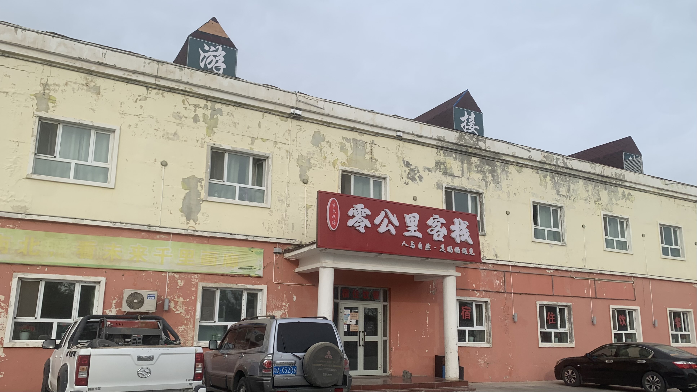
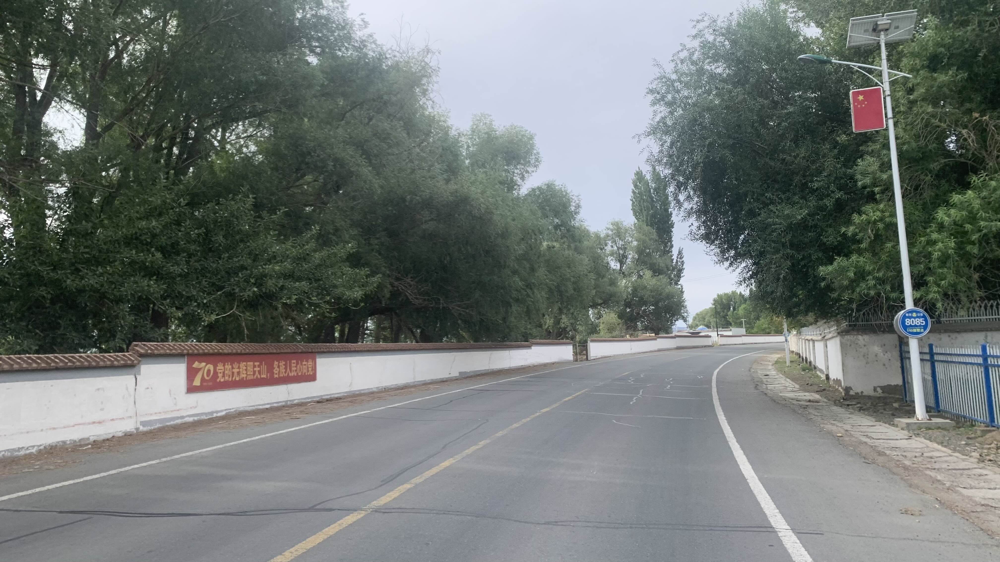
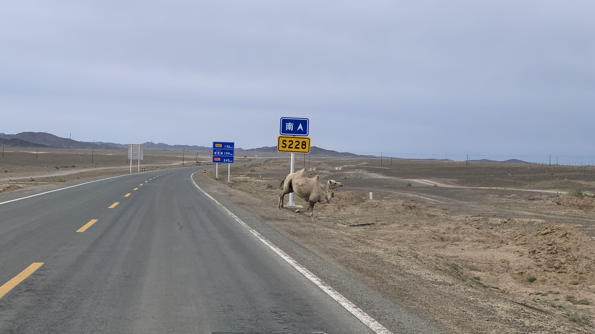
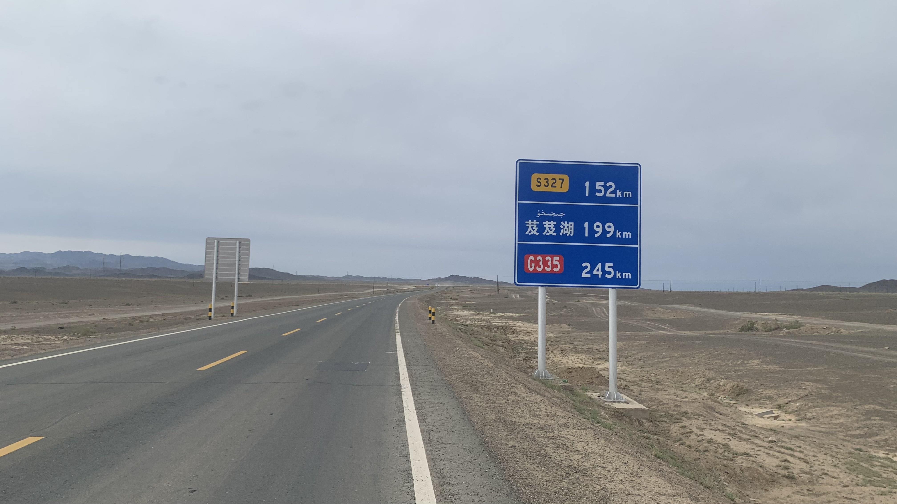
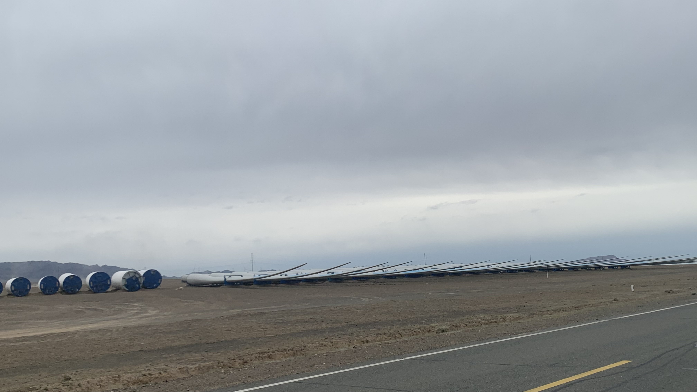
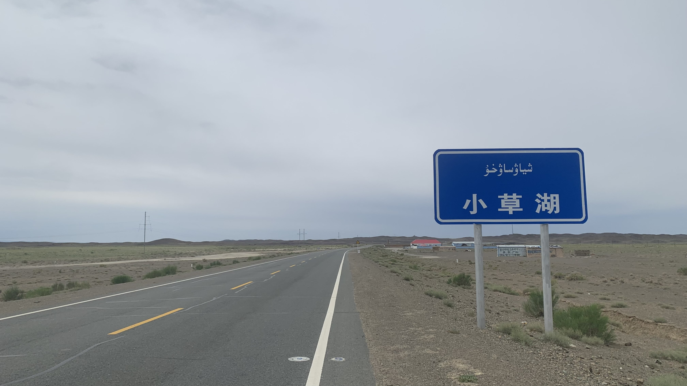
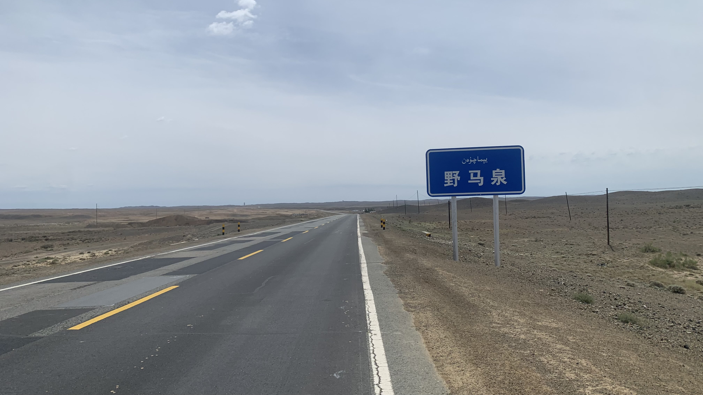
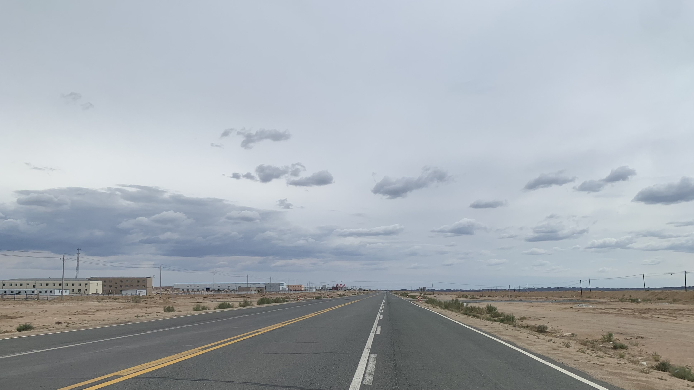
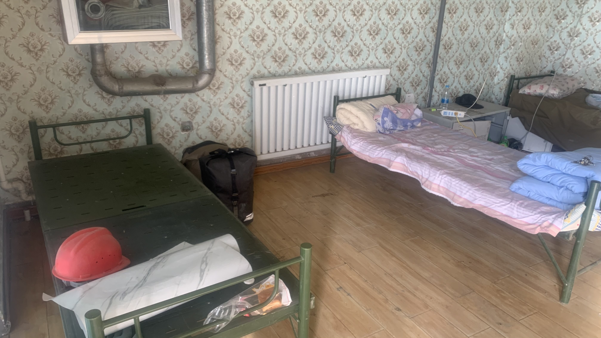
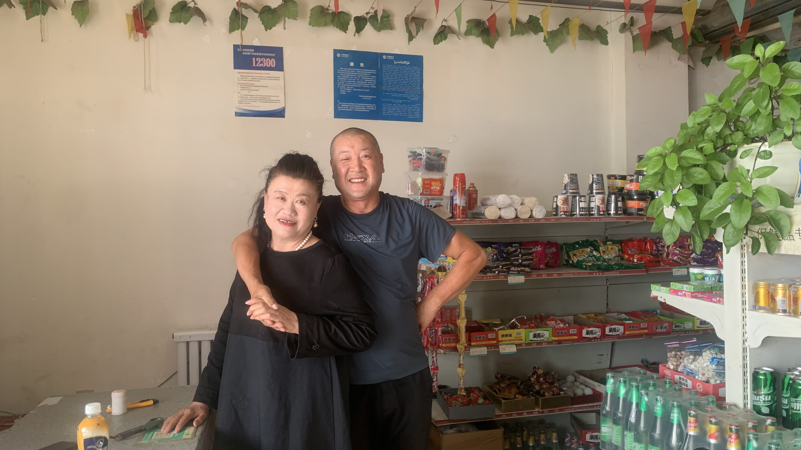

k-Day 126｜準噶爾

聽說不少騎自行車的人都是在這院子裡扎營，推薦這間民宿。

新疆的鄉村配色很乾淨，燈柱上的8085是報警點，據說城鎮裡是每隔50公里一個點。

新疆的駱駝似乎沒有毛，這隻的身體被畫上標記。

路牌上最近的地名叫芨芨湖，距此地尚有199公里。除此之外只有省道和國道連接處的里程。

中午十二點半，準時起風。路旁堆著許多風力發電機的零件。

沿途什麼都沒有，風景也很一般，感覺只是用來連接南北之間的電纜經過的地方。下午一點看到名為小草湖的地標，坐下來吃個東西休息。

下一個地標叫做野馬泉，同樣散發一種只為了前後礦區城鎮存在的感覺。

慢慢的沿途出現一整排大型礦場，傳說中的準格爾盆地就長這樣呢。

既然有這麼多大型工廠，餐廳超市當然是不能少的。
挑了一間走進門，老闆看到我就直接請了一瓶飲料。自己買了一隻新疆奶糕，坐下和老闆聊天。
老闆說旁邊的礦區老闆大多是福建人，因此工人們也都是從福建來的。整個新疆大致如此，來自全國各地的人都匯集在這裡。
自從七五後新疆安全很多，在外面搭帳篷完全沒問題，但老闆又補了一句：「隔壁那間是空的，你晚上可以睡在裡面。」

老闆娘開了門讓我把行李都拿進去，鋪上睡墊後躺了一下，全身都黏黏癢癢的。這幾天越來越熱，不洗澡實在受不了。
索幸走到超市又買了一瓶飲料和泡麵，坐在門口吃晚餐。

幫老闆夫婦拍了照。到新疆後遇到的超市老闆都是溫和類型的，心裡其實有點意外，和我在東邊認識的中國不一樣。
今日花費： 19、冰 5、晚餐、16元